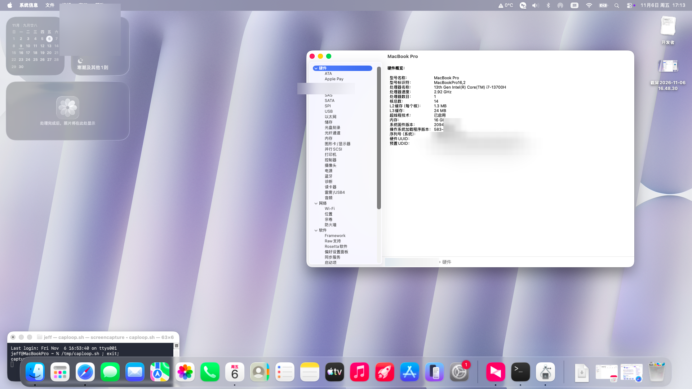
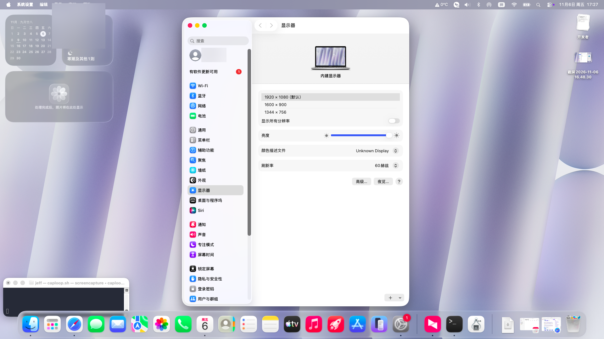
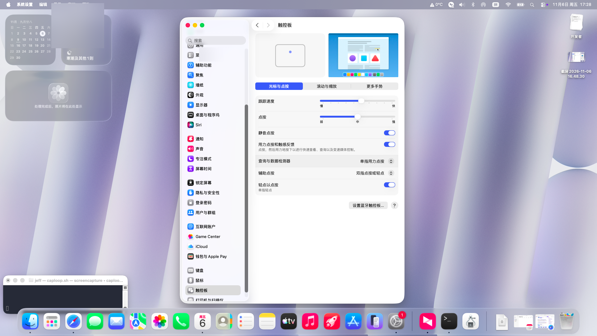
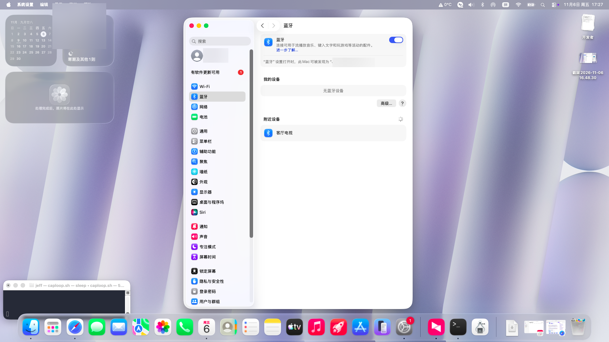
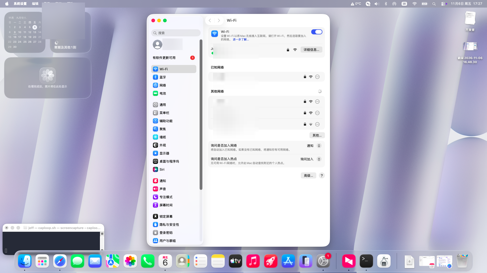
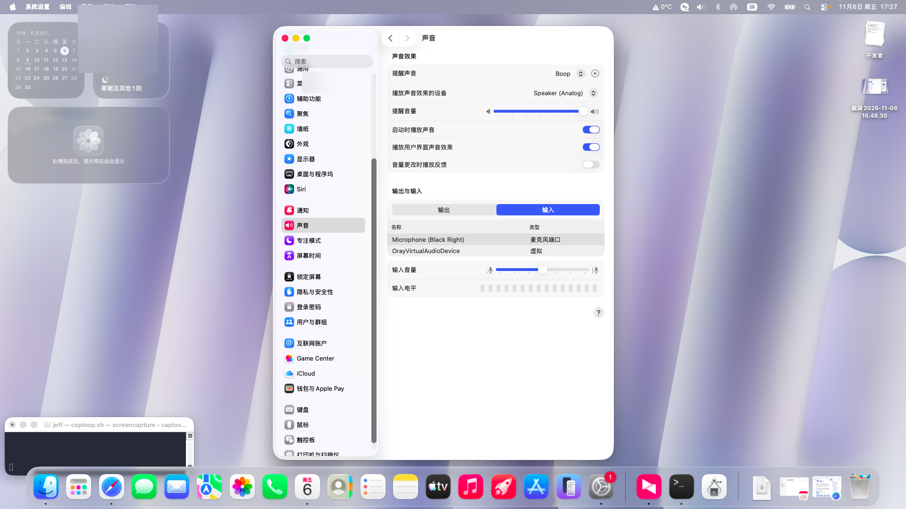
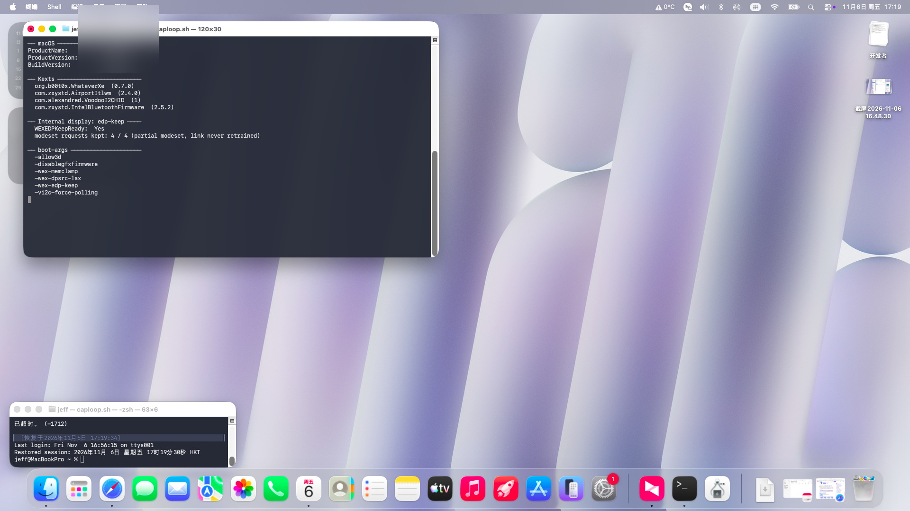

HP ZBook Power G10 · macOS 26 Tahoe 黑苹果
HP ZBook Power G10（i7-13700H / Raptor Lake-H）在 macOS 26.7.1 上的完整可用配置记录：每一项硬件当前能不能用、靠什么实现、遇到什么问题、怎么解决的。
内屏（eDP）、触摸板、Wi-Fi、蓝牙、音频、电池、摄像头、USB 全部可用；睡眠不可用（原因与取舍见下文）。
1. 机器配置
| 项目 | 规格 |
|---|---|
| 机型 | HP ZBook Power G10（移动工作站） |
| CPU | Intel Core i7-13700H（6P + 8E，20 线程） |
| 核显 | Intel Iris Xe / UHD Graphics，Device ID 0xA720 |
| 内存 | 16 GB |
| 硬盘 | Samsung MZVL2512HCJQ（512 GB NVMe，PM9A1） |
| 屏幕 | 1920×1080 eDP 内屏（无独显） |
| 系统 | macOS 26.7.1（Build 25G241，Tahoe） |
| 引导 | OpenCore 1.0.9（DBG-109-2026-10-23） |
| SMBIOS | MacBookPro16,2 |
2. 系统截图
截图中的序列号 / UUID / 用户名 / Wi-Fi 名称已做模糊处理。
点开查看截图
 |
 |
| 系统信息 · 硬件概览（i7-13700H / 16GB / UHD 1536MB） | 显示器 · 内屏 1920×1080 60Hz 正常输出 |
 |
 |
| 触控板 · ELAN07BB 经 VoodooI2C 正常识别 | 蓝牙 · Intel AX211 蓝牙可用 |
 |
 |
| Wi-Fi · AX211 已连接 | 声音 · VoodooHDA 扬声器/耳机 |
 |
|
| 终端验证 · 驱动版本 / edp-keep 4/4 / boot-args |
3. 硬件支持总表
| 硬件 | 型号 / ID | 状态 | 实现方式 |
|---|---|---|---|
| CPU | i7-13700H | ✅ 20 线程（6P/8E 拓扑修正），单核睿频约 3.7–3.9GHz | CpuTopologyRebuild + SSDT-PLUG-ALT + CPUFriend（见 §5.6） |
| 核显 | UHD 0xA720 |
✅ Metal 2，VRAM 1536 MB | WhateverXe 0.7.0 + AppleIntelTGLCompat |
| 内屏 | 1920×1080 eDP | ✅ 点亮（关键：-wex-edp-keep） |
见 §5.1 |
| 触摸板 | ELAN07BB（I2C HID） | ✅ 顺滑（轮询模式） | VoodooI2C 2.9.1 + VoodooI2CHID + -vi2c-force-polling |
| 键盘 | PS/2 | ✅ 含亮度键 | VoodooPS2Controller 2.3.8 + BrightnessKeys |
| Wi-Fi | Intel Wi-Fi 6E AX211（8086:51ef，CNVi） |
✅ 自动连接 | AirportItlwm 2.4.0 + 开机守护脚本 |
| 蓝牙 | Intel AX211 BT（USB 8087:0033） |
✅ 可用 | IntelBluetoothFirmware + IntelBTPatcher + BlueToolFixup |
| 有线网卡 | Intel I219-LM（8086:51a4） |
✅ 可用 | IntelMausiEthernet 3.0.3 |
| 音频 | 板载（VoodooHDA） | ✅ 扬声器 + 耳机口 | VoodooHDA 3.0.2（Tahoe 无 AppleHDA，AppleALC 不可用） |
| 电池 | 智能电池 | ✅ 电量/循环次数正常 | SMCBatteryManager + ECEnabler |
| 存储 | NVMe | ⚠️ 可用，偶发写超时死机（硬件问题） | NVMeFix 1.1.4 |
| 摄像头 | HP HD Camera（UVC 1480:2822） |
✅ 原生免驱 | macOS 原生 UVC |
| USB | — | ✅ 端口定制正常 | USBToolBox + UTBDefault + SSDT-USBX |
| 读卡器 | Card Reader | ⚠️ 未验证/未驱动 | — |
| 指纹识别 | — | ❌ 无解（macOS 不支持第三方指纹） | — |
| 睡眠 | — | ❌ 主动禁用 | 见 §6 |
4. 项目结构
.
├── README.md
├── docs/
│ ├── internal-display-fix.md # 内屏修复的技术细节（AUX 超时 / DPCD / edp-keep）
│ ├── build-from-source.md # 从源码构建 edp-keep 版驱动（含补丁与部署流程）
│ ├── cpu-turbo.md # CPU 睿频：频率表借用、CPUFriend 与实测数据
│ └── images/ # 系统截图
├── efi/
│ └── OC/
│ ├── config.plist # 已清除序列号的公开版本
│ └── ACPI/ # 10 个 SSDT
└── scripts/
├── wifi-fix.sh # 开机 Wi-Fi 自愈脚本
└── com.jeff.wififix.plist # 对应 LaunchDaemon
本仓库不包含第三方 kext 二进制文件，只列版本与来源（见 §7）。请从各项目官方 Release 下载。
5. 关键实现说明
5.1 内屏（eDP）点亮：最大的坑
症状：开机跑码阶段内屏正常显示，macOS 驱动接管瞬间变黑；手电筒照屏幕有背光、无画面，外接显示器正常。
诊断结论（完整证据链见 docs/internal-display-fix.md）：
- 面板本身健康：DPCD 可读，AUX 背光模式寄存器已锁存，亮度值正常
- 内核日志：
FB0: Hardware mode set failed, err = 0xe00002d8（AUX 重试耗尽） - 即：驱动重新训练 eDP 链路时 AUX 事务全部超时，而固件在开机时已经训练好了这条链路
解决方案：启用 -wex-edp-keep（来自 WhateverXe 上游 issue #43 的社区方案，nickk19 的 fork）。
# boot-args
- amfi_get_out_of_my_way=1 msgbuf=1048576 -v
+ amfi_get_out_of_my_way=1 msgbuf=1048576 -v -wex-edp-keep
原理：驱动检测到固件已训练好的链路时，回答 Partial modeset，断开重训改为复用现成链路，链路不断、画面不掉。
验证：
ioreg -l | grep WEXEDPKeep
# "WEXEDPKeep" = <01000000040000000400000000...>
# version=1 call=4 kept=4（4 次 modeset 全部被拦为 Partial）
日志中不再出现 Hardware mode set failed，内屏点亮且 Metal 加速正常。
5.2 触摸板：突停突跳
症状：光标移动时突然卡住，然后一次跳到很远处。
- 触摸板型号 ELAN07BB，走 I2C HID（
VoodooI2C），默认使用 GPIO 中断（gpioPin 323） - HP 机型的 GPIO 中断不可靠：中断丢失 → 事件在驱动里积压 → 恢复时一次性涌出
- 日志里没有任何 I2C 错误，因为链路本身没坏，坏的是“通知机制”
解决：强制轮询模式
- amfi_get_out_of_my_way=1 msgbuf=1048576 -v -wex-edp-keep
+ amfi_get_out_of_my_way=1 msgbuf=1048576 -v -wex-edp-keep -vi2c-force-polling
代价是极小的 CPU 占用（8 ms 报告周期），换来完全稳定的手感。
5.3 Wi-Fi：重启后必须手动开关
症状：每次重启后 Wi-Fi 图标是灰的，手动关一下再开就正常。
根因：airportd 在 itlwm 接口就绪之前启动，初始化失败后不再重试；手动开关等于变相重启 airportd。
解决：开机守护，检测接口状态，必要时重启 airportd（见 scripts/）。
sudo cp scripts/wifi-fix.sh /usr/local/bin/wifi-fix.sh
sudo chmod 755 /usr/local/bin/wifi-fix.sh
sudo cp scripts/com.jeff.wififix.plist /Library/LaunchDaemons/
sudo chown root:wheel /Library/LaunchDaemons/com.jeff.wififix.plist
sudo launchctl bootstrap system /Library/LaunchDaemons/com.jeff.wififix.plist
5.4 音频：VoodooHDA 而非 AppleALC
macOS Tahoe 移除了 AppleHDA.kext，AppleALC 无法直接工作，改用 VoodooHDA。
安装后需在「系统设置 → 声音 → 输出」选择 Speaker (Analog)。
5.5 蓝牙
Intel AX211 的蓝牙走 USB，需要三个 kext 配合：
| Kext | 作用 |
|---|---|
IntelBluetoothFirmware 2.5.2 |
上传 Intel 固件 |
IntelBTPatcher 2.5.2 |
修补 Intel 蓝牙协议栈 |
BlueToolFixup 2.7.3 |
修复 macOS 12+ 蓝牙工具链 |
5.6 CPU 睿频：被 SMBIOS 借用的频率表
症状：「关于本机」显示 2.92GHz，满载实测封顶 3.8GHz（i7-13700H 规格单核 5.0GHz）。
根因：SMBIOS 用 MacBookPro16,2，macOS 于是加载该机型资源表
Mac-5F9802EFE386AA28.plist——它属于 Ice Lake i7-1068NG7（规格恰好全核 3.8 / 单核 4.1GHz），
XCPM 的 hard_plimit_max_100mhz_ratio 被压在 38（3.8GHz）。黑苹果上 CPU 未被真正识别，
macOS 只能照抄别人的频率表。
解决：CPUFriend + 定制 CPUFriendDataProvider，把频率表换成规格最接近的
MacBookPro16,1（i9-9980HK，P 核 2.4GHz 基频 / 5.0GHz 睿频）的版本——新增 4300/4600/5000 三档：
# 1. CPUFriend 官方 Tools 里转换资源表
sh Tools/ResourceConverter.sh --kext Mac-AA95B1DDAB278B95.plist # 产出 CPUFriendDataProvider.kext
# 2. 两个 kext 进 EFI/OC/Kexts，config 的 Kernel → Add 里排在 Lilu 之后
# 3. 关键：macOS 26 属于 CPUFriend 未声明支持的版本，必须加 -cpufbeta
⚠️ 最容易踩的坑：不加
-cpufbeta时 RELEASE 版 CPUFriend 静默不加载数据， 表现是 kext 已在kextstat里、但频率表毫无变化，极难察觉。判定方法：ioreg -l -n X86PlatformPlugin | grep -o '"Frequencies"={[^}]*}' # 生效前：{"4100"=1,"3800"=1} 生效后：{"4300"=1,"4600"=2,"5000"=3,"4100"=0} sysctl machdep.xcpm.hard_plimit_max_100mhz_ratio # 38 → 50（=5.0GHz）
效果与残留：macOS 侧上限已开到 5.0GHz（硬限制 ratio 50、AC 供电、无热警告、封装功耗仅 13W），
但实测持续频率仍在 ~3.7–3.9GHz（自写 AVX2 FMA 基准 ≈111 GFLOPS 交叉验证，非显示误差）。
推断瓶颈在更底层——Cpuid1Data 把 CPU 伪装成 0x000A0655（Comet Lake）后，HWP/EPP 层
仍按伪装的机型调频。深调（DEBUG 版 CPUFriend + EPP 注入 / 换仿冒 ID）风险高、收益不确定，
本项目保持现状。详细测量过程见 docs/cpu-turbo.md。
6. 已知限制
| 限制 | 说明 | 规避 |
|---|---|---|
| 睡眠 / 关屏 / 切换分辨率 | 会触发完整 modeset → 内屏黑到下次重启 | 电源设置里关闭睡眠；不要手动关屏或改分辨率 |
| NVMe 偶发死机 | Samsung PM991a/PM9A1 写超时（Windows 下也有报告），非 macOS 问题 | 减少强制断电；重要数据勤备份 |
| CPU 持续频率 | 睿频上限已开到 5.0GHz，但实测持续约 3.7–3.9GHz（伪装 CPUID 导致） | 无（见 §5.6） |
| 读卡器 | 未验证 | 用 USB 读卡器 |
| 指纹 | macOS 无第三方指纹驱动 | — |
| 系统升级 | 大版本升级可能破坏驱动栈 | 升级前备份 EFI |
7. Kext 清单
| Kext | 版本 | 来源 |
|---|---|---|
| Lilu | 1.7.3 | acidanthera/Lilu |
| WhateverXe | 0.7.0 | b00t0x/WhateverXe |
| AppleIntelTGLCompat | 0.7.0 | 同上（PlugIn） |
| VirtualSMC / SMCProcessor / SMCSuperIO / SMCBatteryManager / SMCLightSensor | 1.3.9 | acidanthera/VirtualSMC |
| CpuTopologyRebuild | 2.0.2 | b00t0x/CpuTopologyRebuild |
| CPUFriend / CPUFriendDataProvider | 1.2.9 | acidanthera/CPUFriend（自制 DataProvider） |
| AMFIPass | 1.4.1 | dhinakg/AMFIPass |
| RestrictEvents | 1.1.7 | acidanthera/RestrictEvents |
| NVMeFix | 1.1.4 | acidanthera/NVMeFix |
| ECEnabler | 1.0.6 | 1Revenger1/ECEnabler |
| VoodooPS2Controller | 2.3.8 | acidanthera/VoodooPS2 |
| VoodooI2C / VoodooI2CHID / VoodooGPIO / VoodooI2CServices | 2.9.1 | VoodooI2C/VoodooI2C |
| VoodooInput | 1.1.7 | kishorprins/VoodooInput |
| BrightnessKeys | 1.0.4 | acidanthera/BrightnessKeys |
| AirportItlwm | 2.4.0 | OpenIntelWireless/itlwm |
| IntelBluetoothFirmware / IntelBTPatcher | 2.5.2 | OpenIntelWireless/IntelBluetoothFirmware |
| BlueToolFixup | 2.7.3 | acidanthera/BrcmPatchRAM |
| IntelMausiEthernet | 3.0.3 | Mieze/IntelMausiEthernet |
| VoodooHDA | 3.0.2 | chris1111/VoodooHDA-Tahoe |
| USBToolBox / UTBDefault | 1.2.0 | USBToolBox |
8. SSDT 清单
| SSDT | 作用 |
|---|---|
SSDT-PLUG-ALT |
CPU 电源管理（plugin-type） |
SSDT-EC |
假嵌入式控制器，避免与真 EC 冲突 |
SSDT-SBUS |
SBUS / SMBus 补全 |
SSDT-MCHC |
内存控制器设备节点 |
SSDT-PNLF |
背光控制设备（配合 WhateverXe 亮度） |
SSDT-GPI0 |
GPIO 控制器（触摸板中断/轮询） |
SSDT-XOSI |
操作系统判断兼容 |
SSDT-RTCAWAC |
RTC 与 AWAC 时钟 |
SSDT-USBX |
USB 供电属性 |
SSDT-USB-Reset |
USB 端口复位 |
9. boot-args 逐项说明
| 参数 | 作用 |
|---|---|
-v |
详细模式（保留，便于排障） |
msgbuf=1048576 |
扩大内核日志缓冲（1 MB） |
amfi_get_out_of_my_way=1 |
AMFI 宽松模式（AMFIPass 需要） |
IGLogLevel=3 |
核显驱动日志等级 |
-ngreentglwithgfx / -allow3d / -disablegfxfirmware |
核显加速与传统开关 |
ngreen-dmc=adlp / -ngreenv189 |
DMC 固件与版本伪装 |
-ngreenkeepefi / -ngreenxefix / -ngreenfixbootmode |
早期引导修补 |
-wex-memclamp / -wex-dpsrc-lax / -igfxdvmt |
显存与 DP 源宽松匹配 |
-wex-edp-keep |
复用固件训练好的 eDP 链路（内屏点亮关键） |
-vi2c-force-polling |
触摸板强制轮询（解决突停突跳） |
-cpufbeta |
让 CPUFriend 在未声明支持的 macOS 版本上生效（必需，见 §5.6） |
10. 使用说明
- 不要直接使用仓库里的
config.plist启动：其中的序列号已替换为占位符 （REPLACE-WITH-YOUR-SERIAL/REPLACE-WITH-YOUR-MLB），必须用 GenSMBIOS 生成自己的MacBookPro16,2三码 - 把
efi/下的内容放入 EFI 分区（EFI/OC/），kext 按 §7 的版本自行下载放入EFI/OC/Kexts/ - 安装
scripts/wifi-fix.sh守护（见 §5.3） - 首次启动建议保留
-v，出问题看log show --predicate 'process == "kernel"' - 内屏修复的 edp-keep 版 WhateverXe 需自行编译，见 docs/build-from-source.md
⚠️ 本仓库仅为个人机器配置记录，不构成安装指导。黑苹果有风险，操作前请备份。
11. 致谢
- WhateverXe —— Raptor Lake 核显驱动
- nickk19 ——
-wex-edp-keep补丁 - OpenCore / Lilu / VirtualSMC
- VoodooI2C —— 触摸板
- OpenIntelWireless —— Wi-Fi / 蓝牙
- chris1111 —— VoodooHDA Tahoe 安装器
License
本仓库的文档与脚本采用 MIT 协议；各第三方 kext 遵循其各自许可证。